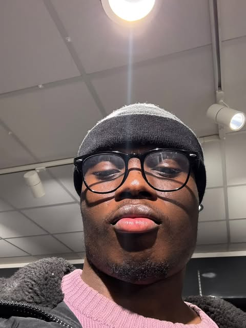

joshua ogundeji

summary
i am a young talented trainee programmer/ webdeveloper and this website is my first - of many, and sort of a progress tracker
Education
- OBMS Nigeria 2016-2020
- here I gained valuable people skills and an high tolerance to pressure
- Ark Charter Academy 2020-2022
- HSDC 2022-2024
- first year in this college made me develop a through sense of belonging as i was surrounded by people that looked like me
- second year was a bit of struggle, didnt quite graduate with the grades i was looking for
subjects i took include:
- alevels chemistry
- alevels biology
- alevels psychology
work experience
- sparkling solutions cleaning agency (3months)
- the mint people agency (2years)
- mcdonalds (till date)